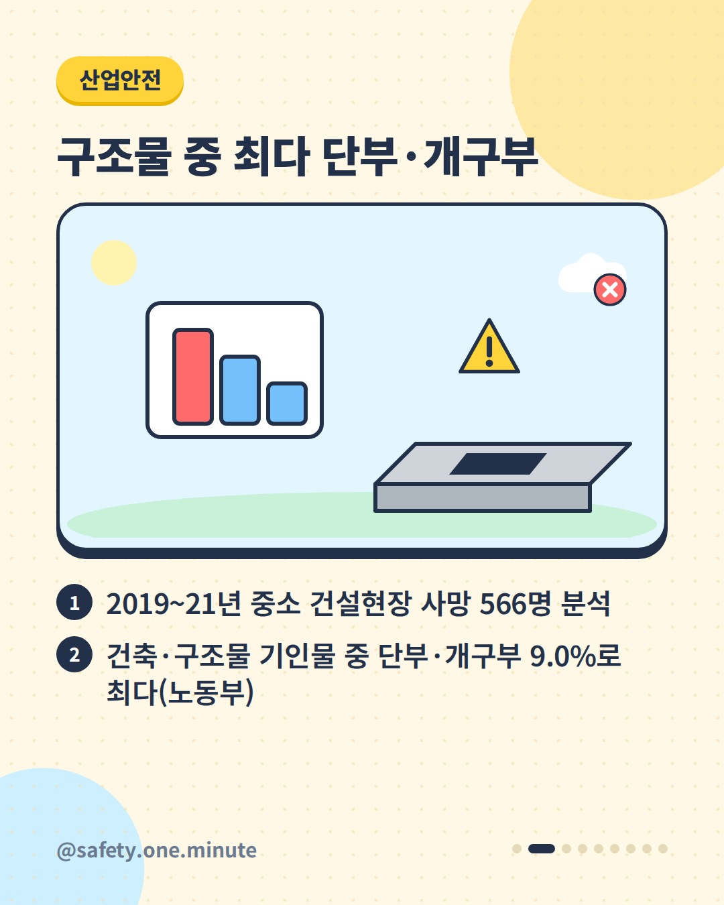
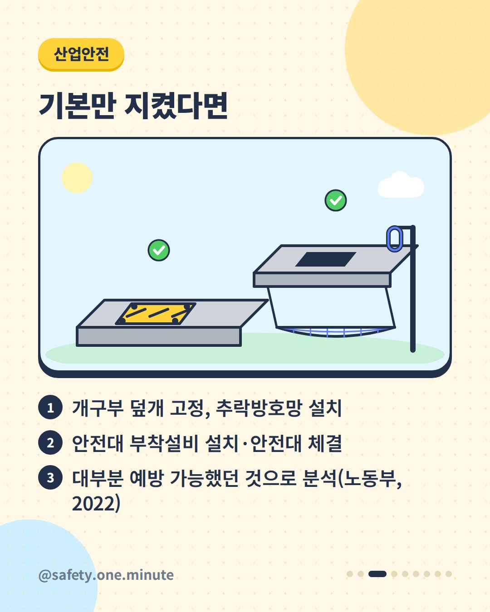
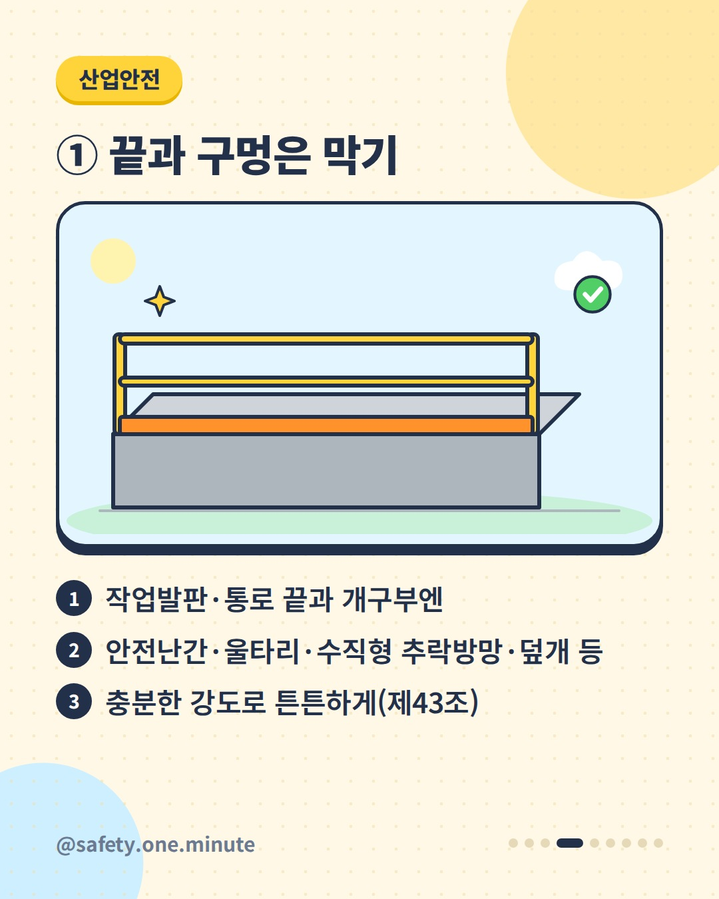
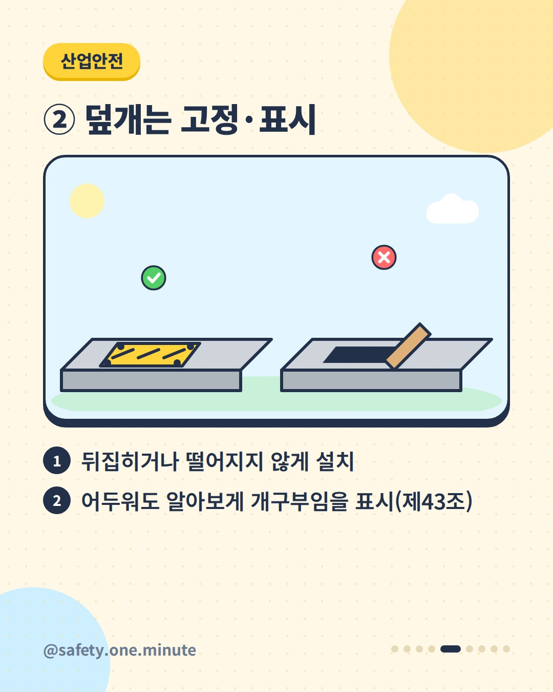
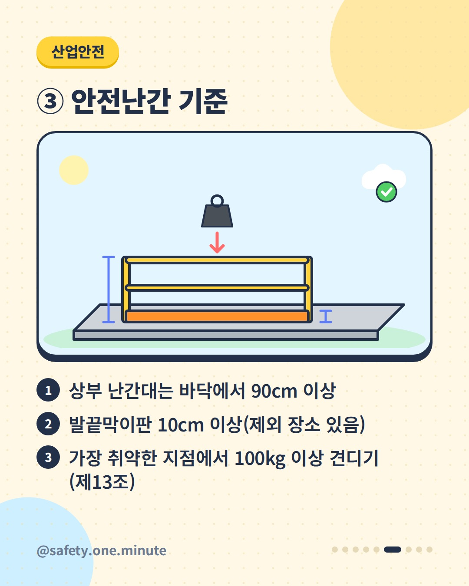
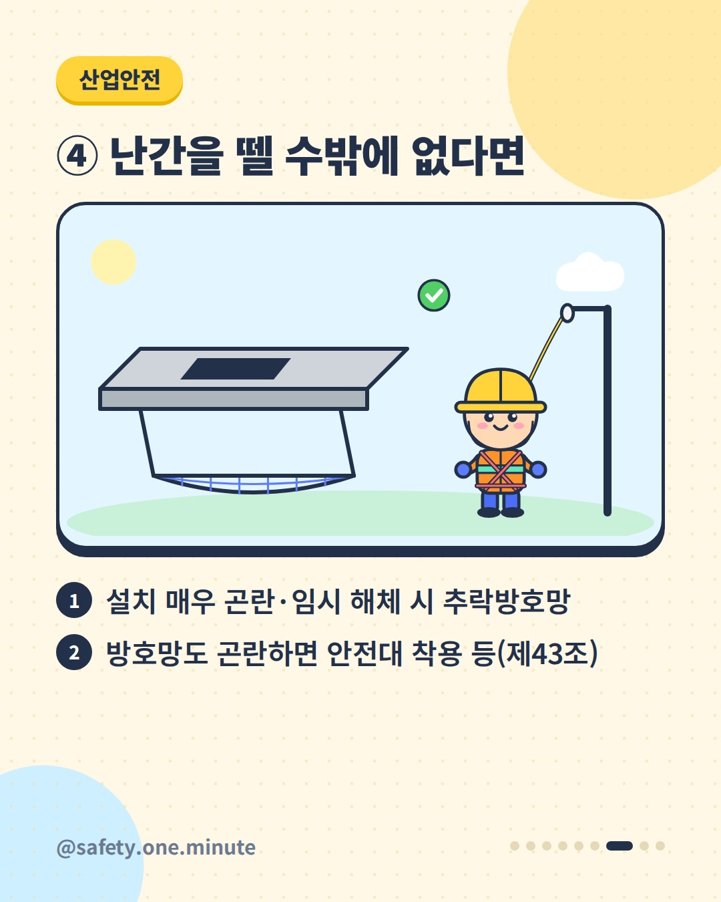
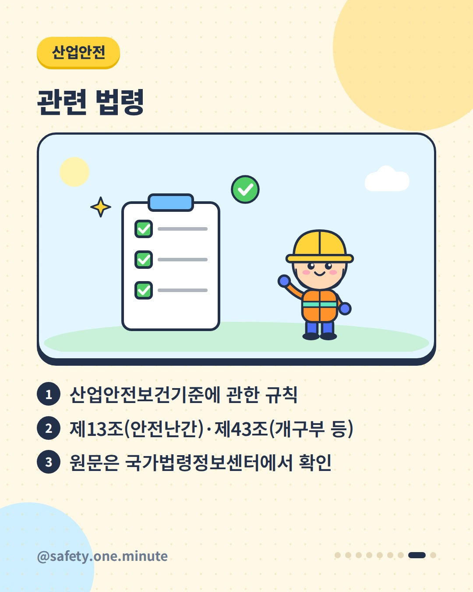
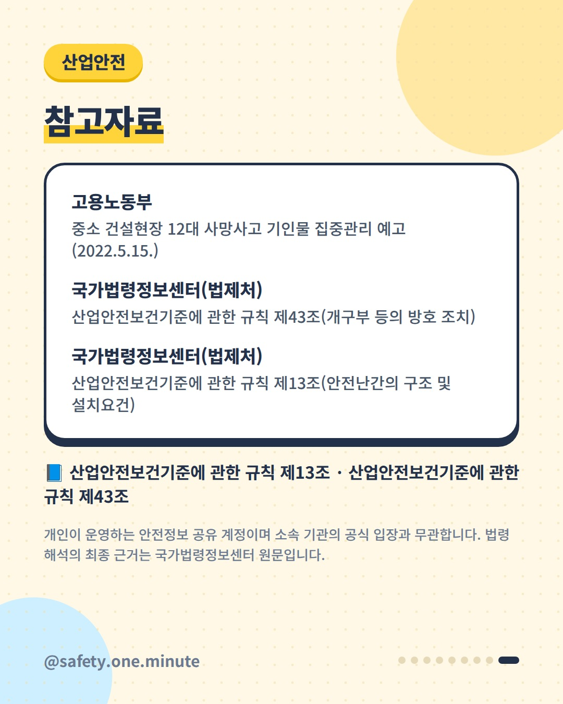

바닥 구멍, 덮기만 하면? — 9장 (4:5)








캡션
바닥에 뚫린 구멍, 판자 하나 올려 두면 충분할까요? 고용노동부가 2019~2021년 중소 건설현장 사망자 566명을 분석한 결과(2022), 건축·구조물 기인물 가운데 단부·개구부가 9.0%로 가장 많았습니다. 개구부 덮개 고정, 추락방호망, 안전대 부착설비 설치와 체결 같은 기본 조치를 지켰다면 대부분 예방할 수 있었던 것으로 분석됐습니다. 산업안전보건기준에 관한 규칙은 이렇게 정하고 있습니다. ① 작업발판·통로의 끝과 개구부엔 안전난간·울타리·수직형 추락방망·덮개 등을 충분한 강도로 튼튼하게(제43조) ② 덮개는 뒤집히거나 떨어지지 않게 설치하고, 어두워도 알아보게 개구부임을 표시(제43조) ③ 안전난간은 상부 난간대 90cm 이상, 발끝막이판 10cm 이상, 가장 취약한 지점·방향에서 100kg 이상 하중에 견디는 구조(제13조) ④ 난간을 설치하기 매우 곤란하거나 임시로 떼야 하면 추락방호망, 그것도 곤란하면 안전대 착용 등(제43조) ※ 세부 요건(중간 난간대, 발끝막이판 제외 장소 등)은 법령 원문(2025.9.1. 시행본 기준)을 확인하세요. 출처: - 고용노동부 – 중소 건설현장 12대 사망사고 기인물(2022) - 국가법령정보센터(법제처) – 산업안전보건기준에 관한 규칙 제13조·제43조 개인이 운영하는 안전정보 공유 계정이며 소속 기관의 공식 입장과 무관합니다. 법령 해석의 최종 근거는 국가법령정보센터 원문입니다. #개구부 #안전난간 #추락방지 #건설안전 #산업안전 #안전보건규칙